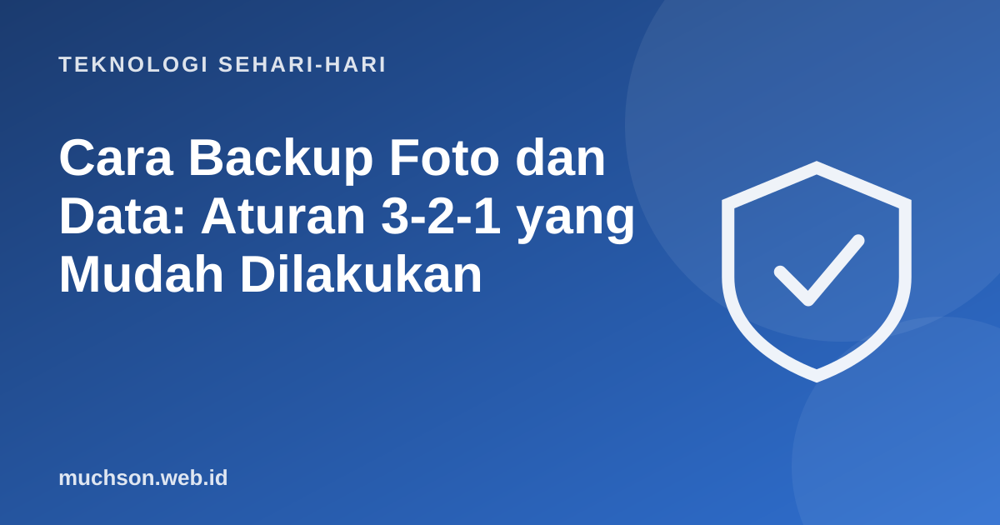

Beranda › Artikel › Teknologi Sehari-hari
Teknologi Sehari-hariCara Backup Foto dan Data: Aturan 3-2-1 yang Mudah Dilakukan
Data yang berharga biasanya baru terasa nilainya saat hilang: foto keluarga, dokumen penting, hasil kerja bertahun-tahun. Cadangan yang baik tidak harus rumit. Satu aturan sederhana sudah menutup hampir semua risiko.

Aturan 3-2-1
Hitung kebutuhan penyimpanan
Rutinitas sederhana
Bedakan sinkronisasi dan cadangan
Sinkronisasi bukan cadangan. Bila file terhapus atau terenkripsi oleh virus di satu perangkat, sinkronisasi bisa ikut menghapusnya di semua perangkat. Cadangan sejati menyimpan versi lama.
Tanya jawab
Apakah cukup memakai layanan awan saja?
Lebih baik daripada tanpa cadangan, tetapi sebaiknya tetap ada satu salinan lain di tempat berbeda. Akun awan juga bisa terkunci atau diretas.
Berapa sering sebaiknya backup?
Foto dan dokumen aktif sebaiknya otomatis. Salinan ke disk eksternal sebulan sekali sudah baik bagi kebanyakan orang.
Bagaimana mengamankan cadangan?
Enkripsi cadangan sensitif dan lindungi akun awan dengan sandi kuat serta verifikasi dua langkah.